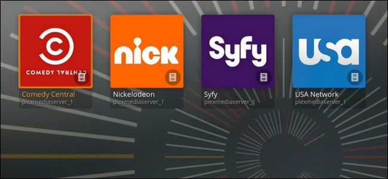
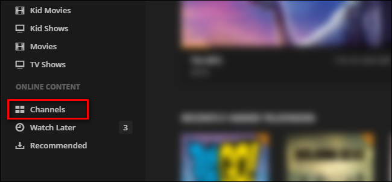
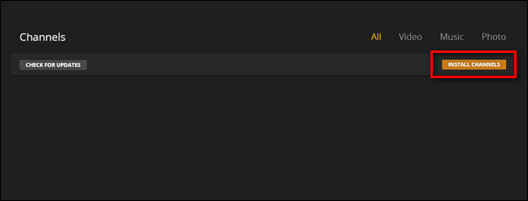
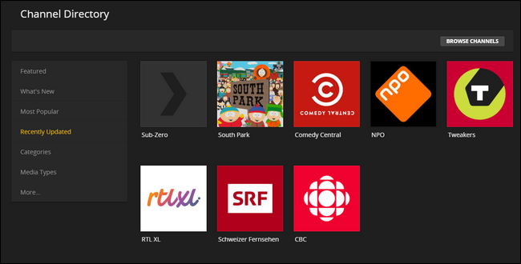
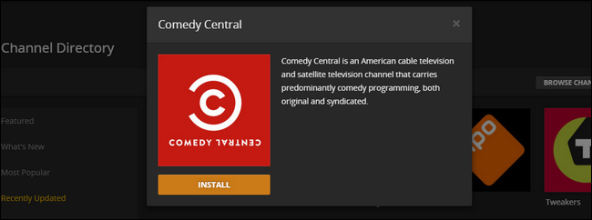
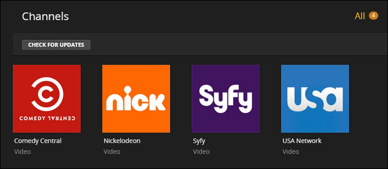
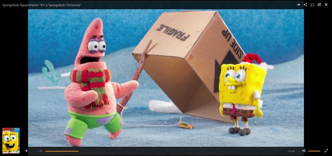
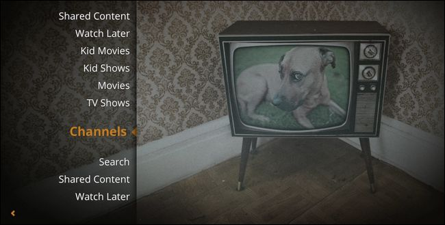
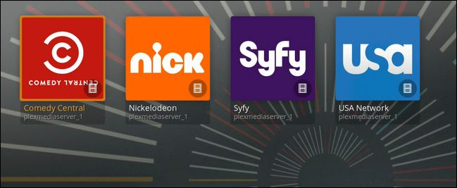
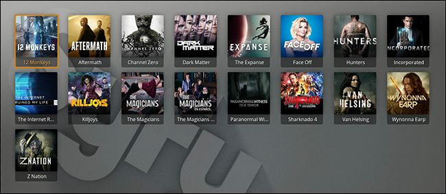

How-To Geek
How to Stream TV on Your Plex Media Center with Plex Channels

Plex Media Center is best known for super easy playback of local media files, but that doesn’t mean you can’t tap into the power of streaming video. The Channel system makes it easy to add content from a variety of sources ranging from well known TV stations to specialty content.
We’ve shown you how to set up Plex to watch your movies on any device and we’ve shown you how to save internet video for later viewing, but the Channel system offers something a bit different. Instead of curating your own content, the Channel system allows you to add content that you can browse at your whim. It uses the already-established streaming sites for channels like USA, SyFy, or Comedy Central, so while you won’t get all episodes of every show, you can watch anything you’d be able to stream from those sites—legally!

Adding Channels to Plex
Getting started with Plex Channels is as easy as logging into your Plex server from the web portal and looking for the “Online Content” category on the left hand side. Select “Channels” to get started.

If you’ve never used the Channels feature before, things will look a little sparse. Click the “Install Channels” button to remedy that.

Inside the Channel Directory, you’ll find a variety of sub-categories like “Featured”, “Most Popular”, and “Recently Updated”. The Recently Updated category is a great place to start because, we’ll admit, not all Channels are properly maintained, and sometimes changes in the source (like how, say, ABC, structures their video feeds) will break them. Starting off with a recently updated channel makes it easier to test things out.

To start, we’ll add the “Comedy Central” Channel—so we can watch Drunk History through Plex, naturally. Select any channel in whatever category you’re browsing.

Click the “Install” button. Once installed, click the “X” in the corner and repeat the process, adding a few extra channels that look interesting. Once you’ve stocked up the Channels tab, it’s time to actually browse the channels you’ve added.
Viewing Channels in Plex
There are two ways to check out your new Plex channels. You can, as with all your video content, watch right in the same web interface you just used to set the Channels up. Simply select Channels again and pick a Channel:

Browse around for something interesting to watch and, suddenly, a SpongeBob Christmas special:

If you have a Chromecast or Google-Cast-enabled TV, you can sling that video right over. Although watching it in-browser or shooting it across the network is convenient, you can also access it in a more traditional way if you have Plex set up on your smart TV or a standalone device, like RasPlex on the Raspberry Pi.
Here’s what the Channels menu looks like on our RasPlex installation—all the Channel goodness with all the ease of sitting on the couch:

Because of Plex’s centralized system, all the Channels we just added a moment ago are already available.

After that SpongeBob special we’re in the mood for a little more serious fare, so why don’t we head over to the SyFy Channel.

Here we can watch current episodes of shows like Incorporated, The Expanse, and 12 Monkeys—no cable subscription or sketchy downloads required.
![]()
![]()
![]()
![]()
![]()
![]()
![]()
![]()
![]()
I setup my channels quite a while back and every time I try to access a specific show that is listed it pulls up the season and then says that the folder is empty. I have yet to actually be able to use the channels for viewing
That's odd, are you using up-to-date versions of Plex and the channels? I just watched South Park on Comedy Central using the channel system last night.
Do I need to get Plex Premium? I just checked Syfy channel for episodes ofFace Off and every season says 0 episodes available
The channels feature is included in the free version of Plex, so that shouldn't be an issue. That said the channel plugins are at the mercy of the sources they pull from so sometimes content is missing (because the source provider, like SyFy, has pulled the video or changed its location).
I'd recommend just trying a few different channels and even shows within those channels to see if its an across the board problem or just a few missing shows.